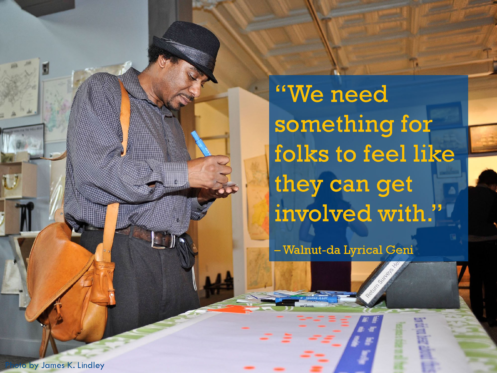

Community Stewardship
|  |
 The MAPC Project Team got the sense throughout our project work studying Downtown Lynn that community members cared a great deal about the future of their community and wanted to participate in making Downtown the best it could be. At the May 2013 Public Forum, participants indicated enthusiasm for Downtown's future and eagerness to get more involved. |
 |
 Active community participation was sought throughout MAPC's work in Downtown Lynn - the above comments are transcribed from community comments about what Downtown needs. |
 Several Lynn residents and business owners came to MAPC's final presentation in January 2014 to share their thoughts on Downtown's future. |
Promote community stewardship of Downtown Lynn:
1. Embrace cross-sector collaboration and coordination. Existing models for cross-sector dialogues in Lynn include the Team of Advisors that convened for this project as well as the Lynn Area Chamber of Commerce Government Affairs Committee, which meets monthly, and the stakeholders group that convened for the Downtown Lynn Cultural District branding initiative. Groups such as these foster opportunities for collaboration and creative problem-solving, increase understanding of what is happening in the City, and allow issues of mutual concern to be aired and addressed.
2. Reconvene the public to revisit and update the Vision for Downtown Lynn every five years. Develop a sense of commitment among all partners and stakeholders to achieving commonly shared principles, values and goals for Downtown Lynn. Active community participation will help to ensure that the community works towards improvements without losing sight of what they like about Downtown the way it is now.
3. Encourage community members to advocate for Downtown Lynn. Change can and should occur at all levels and in all directions: top down, leading from the middle, or from the grassroots. Local advocates can be allies for advocating for investment in Downtown Lynn from state and regional resources, in partnership with their municipal government. They also can ensure Lynn pursues a strategy of equitable development, helping give voice to the interests of residents, small businesses, constituents with limited English proficiency, members of protected classes, low and middle-income households, and other groups that may be concerned about the impacts associated with increased property values and higher rents.
4. Continue to involve residents in committees related to local planning and development, such as the Off-Street Parking Commission, to help increase understanding of land use and economic development challenges and promote community solutions. Identify new and meaningful roles for resident involvement.
5. Cultivate new community leaders. Work closely with local nonprofits and institutions such as RAW Art Works, Centerboard, North Shore Latino Business Association, North Shore Community College, and Lynn Community Health Center to identify emerging leaders with diverse backgrounds and establish opportunities for meaningful civic engagement, participation, and possibly employment.
6. Encourage corporate and institutional stewardship of Lynn by encouraging participation and investment in local events and programs.
7. Embrace Downtown Lynn's unique identity as an urban, diverse, mixed-income community with a broad spectrum nonprofit organizations, government agencies, health and educational institutions, businesses, and housing types to support this complex identity.
8. Promote a culture of honest dialogue to improve credibility and increase trust. Sometimes this may mean being more open to critique and proactively sharing challenges or even failures, but allowing room for dissent or disagreement can lead to creative problem solving and a sense of collective stewardship and pride.